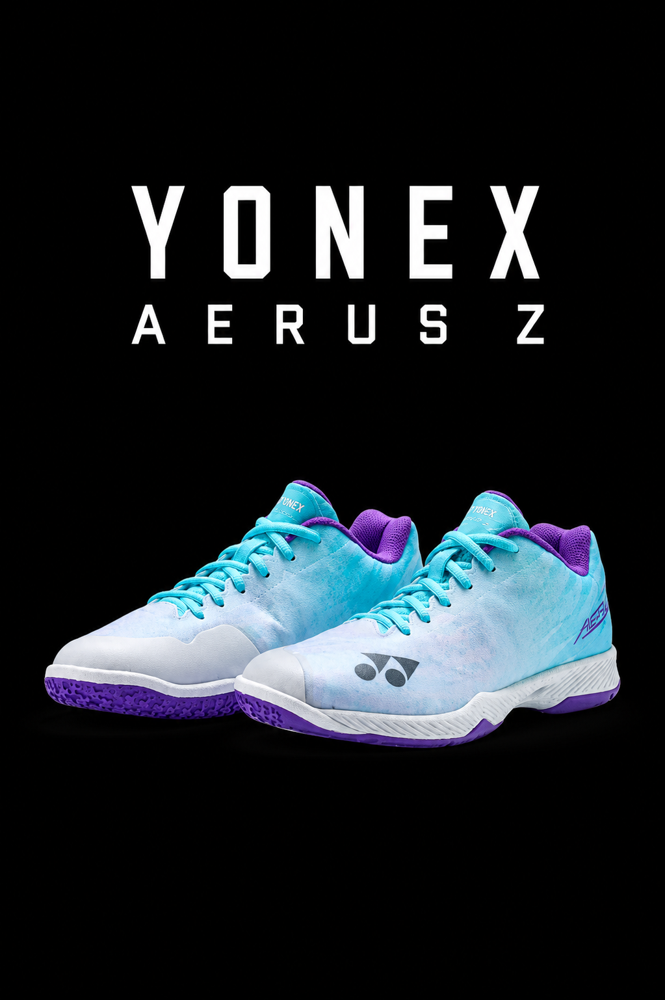

AERUS Z

The Yonex Power Cushion Aerus Z Women's shoe is renowned as the lightest badminton court shoe Yonex produces,
weighing just 250 grams per shoe. Designed for maximum speed and agility, it incorporates Power Cushion+ for
impact absorption and a Radial Blade Sole for superior court grip.
KEY FEATURES AND TECHNOLOGIES:
- Feather Light X: A midsole material that keeps the shoe incredibly light while maintaining excellent bounce
and repulsion.
- Double Raschel Mesh & Durable Skin Light: A breathable, seamless mesh upper that reduces weight and prevents
the shoe from feeling bulky.
- 3D Power Graphite Drive: A carbon plate in the midsole that reinforces stability upon landing and aids with
propulsion.
- Synchro-Fit Insole: Ensures a closer, snugger fit between the shoe and the foot to minimize power loss
during fast movements.
- Radial Blade Sole: Provides enhanced grip for multi-directional movements, crucial for indoor sports.